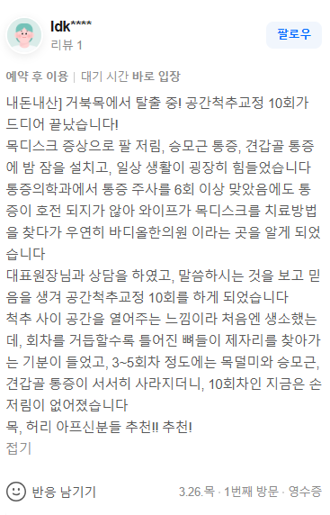

의학적 증례 분석 (경추 정렬 회복 사례)
만성적인 거북목 변형과 경추 추간판 유래성 방사통으로 인해 극심한 팔 저림, 승모근 통증, 견갑골 내측 통증을 호소하며 밤잠을 설치던 환자의 임상 증례입니다. 공간척추교정 과정을 포함한 체계적인 정렬 회복 과정을 통해 일상생활의 정량적 기능 지표가 유의미하게 개선됨을 확인하였습니다.

만성 거북목은 경추 분절의 역학적 변위를 유발하여 신경근을 압박하고 방사통을 일으킵니다.
단순 근육 이완이나 표층 도수치료만으로는 이미 고착된 척추체의 역학적 변위를 물리적으로 재배치하는 데 한계가 있습니다.
바디올 SART 척추정렬회복술은 전통 정골의학(Osteopathy) 및 추나요법의 원리를 바탕으로 척추 분절 간의 물리적 공간을 확보하는 생체역학적 보존 교정 기법으로서, 신경 압박 부위의 내압을 낮추고 퇴행성 척추 질환의 근본적인 구조적 원인 개선을 도모합니다.
경추는 머리의 중력 하중을 분산 지지하는 핵심 구조물입니다. 거북목 형태로 정렬이 무너질 경우 경추 하부 분절에 가해지는 역학적 부하가 급격히 증가하게 됩니다. 이 과정에서 추간판이 후방으로 탈출하거나 정렬이 어긋나면서 신경근(Nerve Root)을 압박하게 되며, 이는 어깨와 팔, 손가락 끝으로 이어지는 방사통과 견갑골 주위의 만성적인 통증을 유발하는 원인이 됩니다[1].
일반적인 근막 이완 술기는 표층 근육의 일시적인 긴장만 해소할 뿐, 정작 심부 신경 압박을 일으키는 척추 분절 간의 역학적 고착 상태를 해소하지 못합니다. 수원 인계동뿐만 아니라 광교, 영통, 동탄 등 광역 지역에서 정밀 교정을 위해 내원하는 바디올에서는 이를 해결하기 위해 SART 메커니즘을 도입하여 척추체 주변의 미세 유착 구조를 분리하고 정상적인 경추 전만 곡선을 회복하도록 유도합니다[2].
경추 분절 간의 역학적 공간 확보를 유도하여 신경근에 가해지는 물리적 압박과 내압을 완화합니다. 거북목 변형으로 인해 무너진 경추의 생체역학적 커브를 물리적으로 정상화하는 데 기여합니다.
신경 주변부의 염증 반응을 제어하는 약침 의학적 처치를 병행하여 통증을 완화합니다. 이와 함께 경추 주변부의 인대와 심부 근육 조직을 강화함으로써, 교정된 척추 정렬의 유지력을 높이고 수술 전 단계에서 안전하게 선택할 수 있는 생체역학적 보존 치료의 대안을 제시합니다.
Binder AI. (2007) | BMJ | PMID: 17347189 / DOI: 10.1136/bmj.39127.600139.80
Hurwitz EL, et al. (2008) | Spine | PMID: 18204391 / DOI: 10.1097/BRS.0b013e3181644b1d